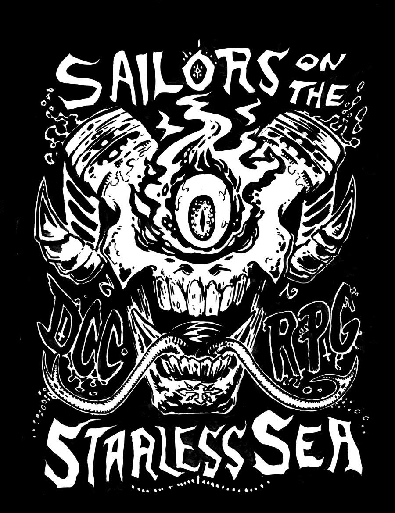
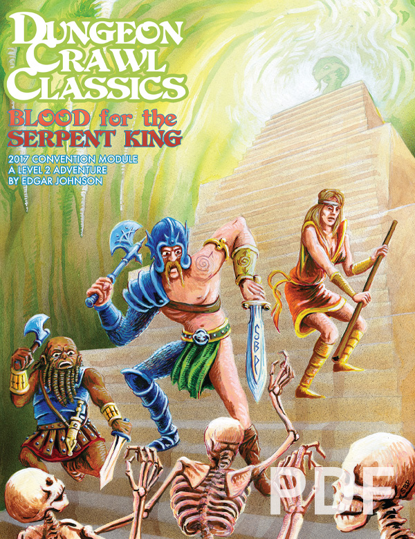
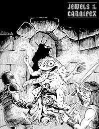
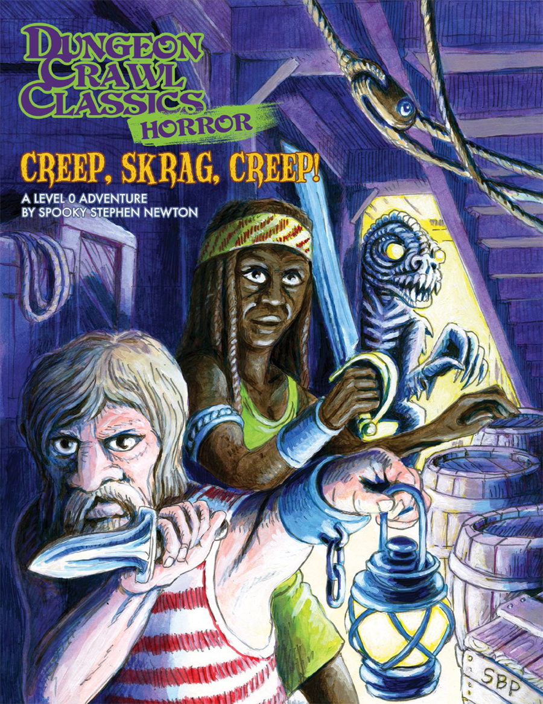
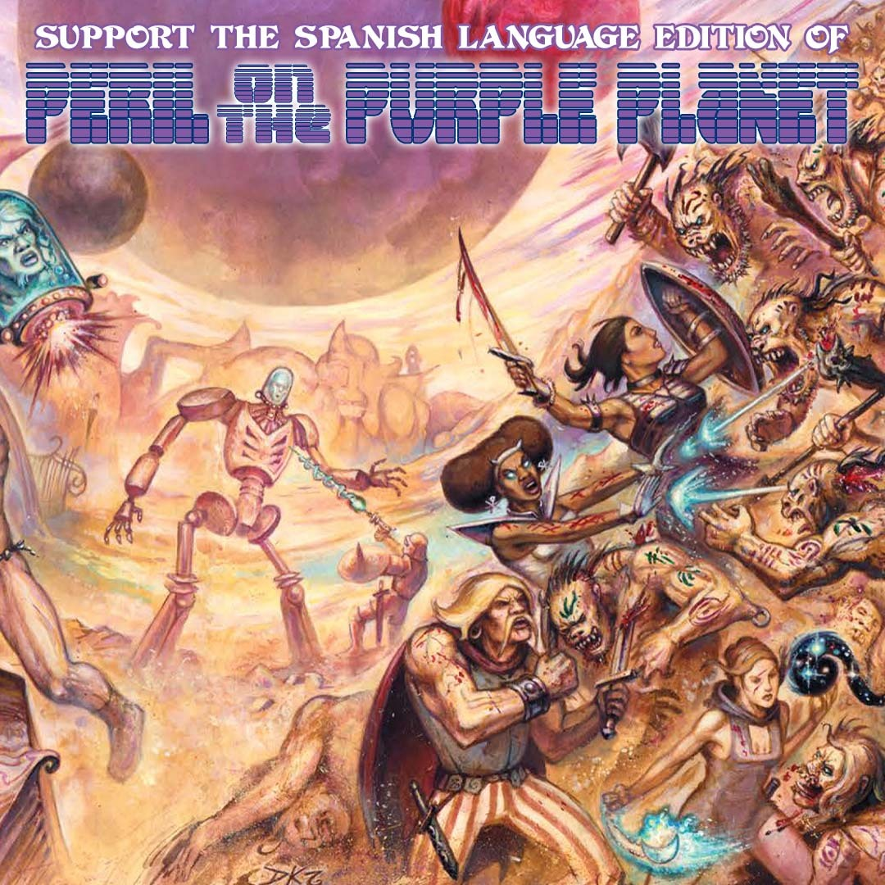
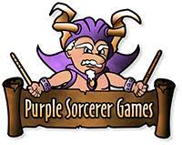

Ressources pour le jeu
Vous trouverez ici une liste de scénario prêt à l'emploi ainsi qu'une fiche de personnage à télécharger
Sailors on the starless sea

Funel. Le meilleur scénario d'introduction à DCC. Pièges, combats, infiltration, exploration, énigmes..tout y est! Extrêmement mortel mais un monument de fun
Télécharger le scénarioBlood for the serpent king

Scénario rapide (une session de 4-5h) pour les aventuriers de niveau 2. Retrouvez et défiez un tyrant venu de la nuit des temps!
Télécharger le scénarioJewels of the Carnifex

Donjon mortel pour les aventuriers de niveau 3-4. Channces de survies très limités, dilemments moreaux et un des meilleurs (et plus long) combat de l'histoire du JDR
Télécharger le scénarioCreep

Scenario funel niveau 0. Une aventure d'horreur et de survie inspiré d'Alien.
Télécharger le scénarioPurple Planet

Cadre de campagne complet de science fantasy. Triomphez de la planête pourpre!
Télécharger le supplémentFiches de personnages

Le site de purple sorcerer vous fourni des outils customisable pour vos personnages
Voir le site